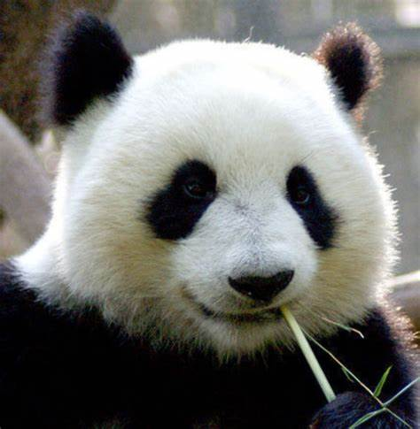
大熊猫已在地球上生存了至少800万年，被誉为“活化石”和“中国国宝”即国兽，世界自然基金会的形象大使，是世界生物多样性保护的旗舰物种。截至2021年1月，中国大熊猫野生种群增至1864只。
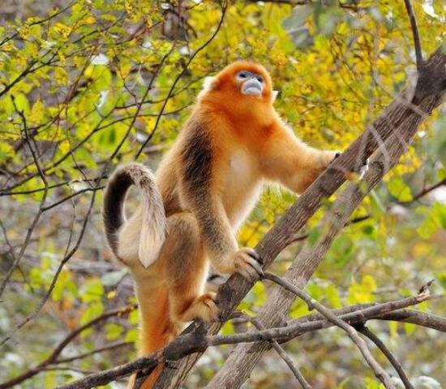
金丝猴，是目猴科仰鼻猴属灵长的统称。又称仰鼻猴，仰鼻猴属下有5种，即滇金丝猴、黔金丝猴、川金丝猴、越南金丝猴和缅甸（怒江）金丝猴。体长约70厘米，尾长约与体长相等或长些；脸部呈蓝色，鼻子只有两个洞，没有鼻梁；嘴大而突出，唇厚，无颊囊；背部的毛长发亮，颜色为青色；头顶、颈、肩、上臂、背和尾灰黑色，头侧、颈侧、躯干腹面和四肢内侧褐黄色。因身体长着柔软的金色长毛得名
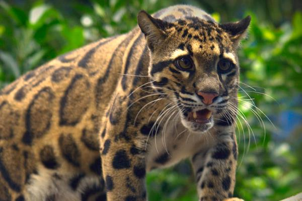
云豹的犬齿与头骨的长度比例在猫科动物中是最长的。云豹是一种小型的豹，它有一条粗大的长尾巴，几乎与身体等长。它的腿短而结实，脚掌宽大。瞳孔长方形，收缩时纺锤形；犬齿锋利，与前臼齿之间的缝隙较大，能够咬杀较大猎物。
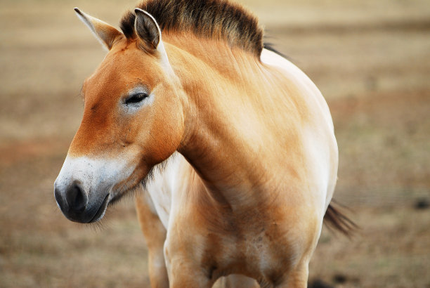
普氏野马（学名：Equus ferus）：是马科、马属的大型食草动物。体长约210厘米，肩高约110厘米，尾长90厘米，体重350千克。头部长大，颈粗，耳比驴短，蹄宽圆。外形似家马，但额部无长毛，颈鬃短而直立。夏毛浅棕色，两侧及四肢内侧色淡，腹部乳黄色；冬毛略长而粗，色变浅，两颊有赤褐色长毛。
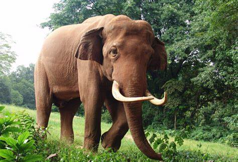
亚洲象是亚洲现存的最大陆生动物，长达1米多的象牙，是雄象上颌突出口外的门齿，也是强有力的防卫武器。象的眼小耳大，耳朵向后可遮盖颈部两侧。四肢粗大强壮，前肢5趾，后肢4趾。尾短而细，皮厚多褶皱，全身被稀疏短毛。头顶为最高点，体长5～6米，身高2.1～3.6米，体重达3～5吨。
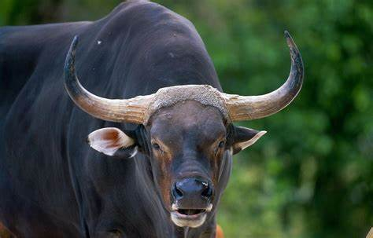
是牛科、牛属动物。体长190-225厘米；尾长65-70厘米；肩度155-165厘米；重量600-800千克。尾细长，下垂过膝部，角较小，成年公牛在两角基部由角质块相连，臀部有一独特的、大的圆盘状白斑，四肢下部染有白色。眼睛上方有白色斑点。
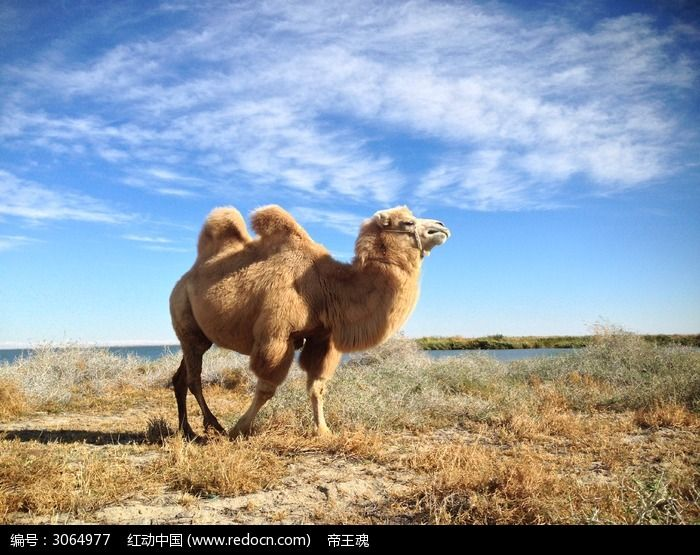
野骆驼（学名：Camelus ferus）巨大的有蹄类动物，头体长3.2~3.5米；肩高1.6~1.8米；体重450~680公斤。背上有两个驼峰。头小，颈长而且向上弯曲，体色金黄色到深褐色，以大腿部（股部）为最深。
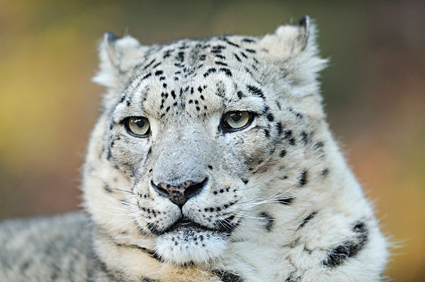
雪豹（Panthera uncia，英语：Snow leopard），是一种大型猫科动物，常在雪线附近和雪地间活动，故名“雪豹”。雪豹分布于青藏高原、帕米尔高原、天山山脉、阿尔泰山脉及我国西部和中亚东部的其它高山地区。其皮毛为灰白色，有黑色点斑和黑环，尾巴长而粗大，在岩石堆中是极好的保护色，有“雪山之王”之称。
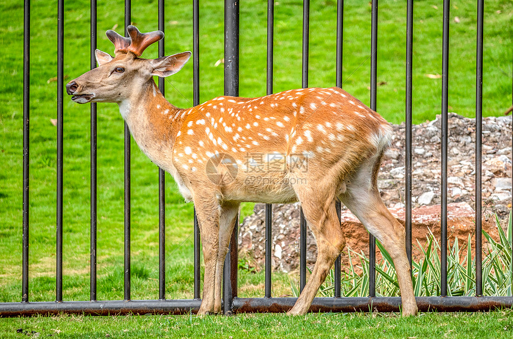
梅花鹿（学名：Cervus nippon）是鹿科鹿属动物，被列入《世界自然保护联盟》低危物种和中国国家一级保护动物。
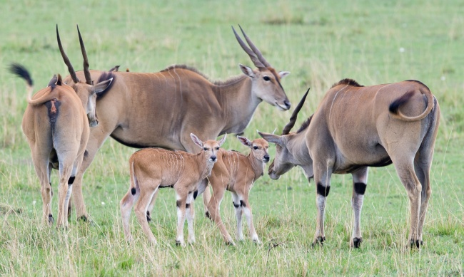
为了保护藏羚羊和其它青藏高原特有的珍稀动物，国家于1983年成立阿尔金山国家级自然保护区，1992年，成立羌塘自然保护区，1995年成立可可西里省级自然保护区，1997年底上升为国家级自然保护区。 2000年成立三江源自然保护区 。藏羚羊属国家一级保护动物。
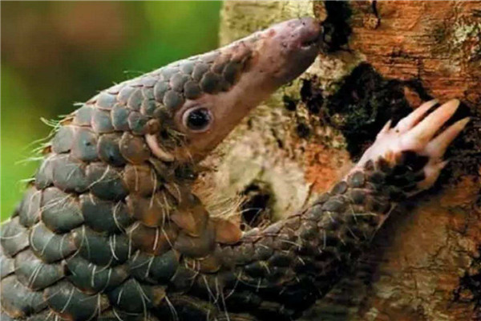
中华穿山甲（学名：Manis pentadactyla）：是鳞甲目、穿山甲科的哺乳动物。头体长42-92厘米，尾长28-35厘米，体重2-7千克；鳞片与体轴平行，共15-18列。尾巴上另有纵向鳞片9-10片。
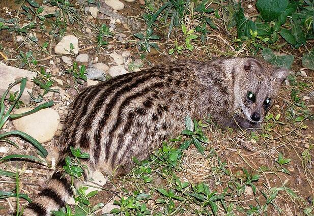
小灵猫（学名：Viverricula indica，英文名：small Indian civet），俗称七间狸、乌脚狸、箭猫、 笔猫、斑灵猫、香狸，[1]属于食肉目灵猫科小灵猫属、国家一级保护动物。


![ 小灵猫 Viverricula indica 小灵猫（学名：Viverricula indica，英文名：small Indian civet），俗称七间狸、乌脚狸、箭猫、 笔猫、斑灵猫、香狸，[1]属于食肉目灵猫科小灵猫属、国家一级保护动物。](images/小灵猫.jpg){kind=link}